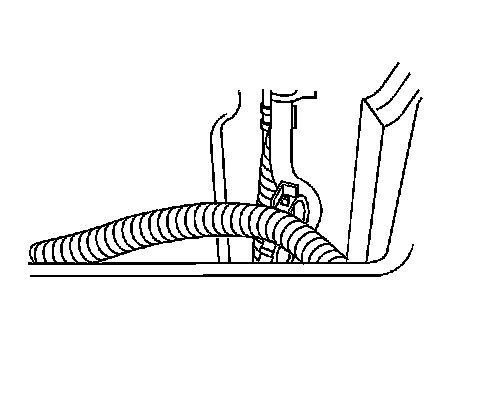
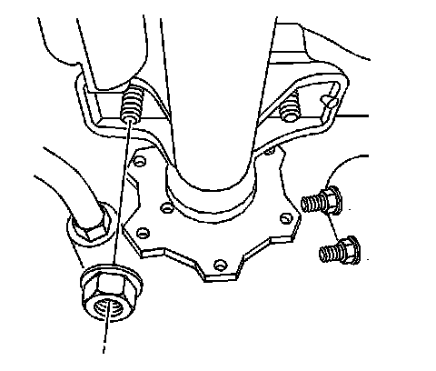
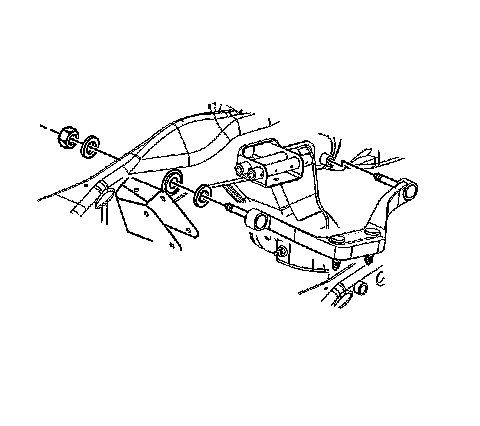
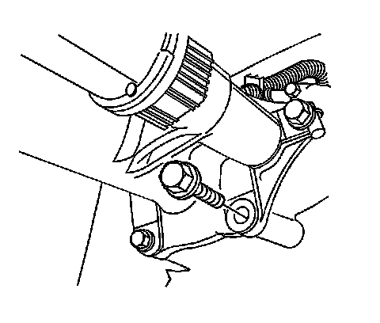
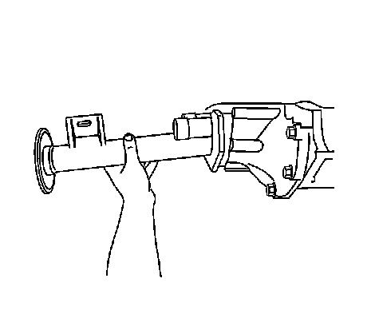
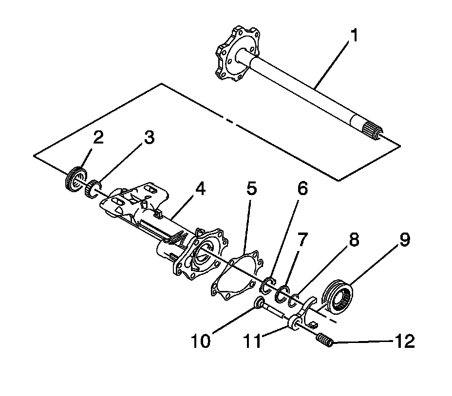
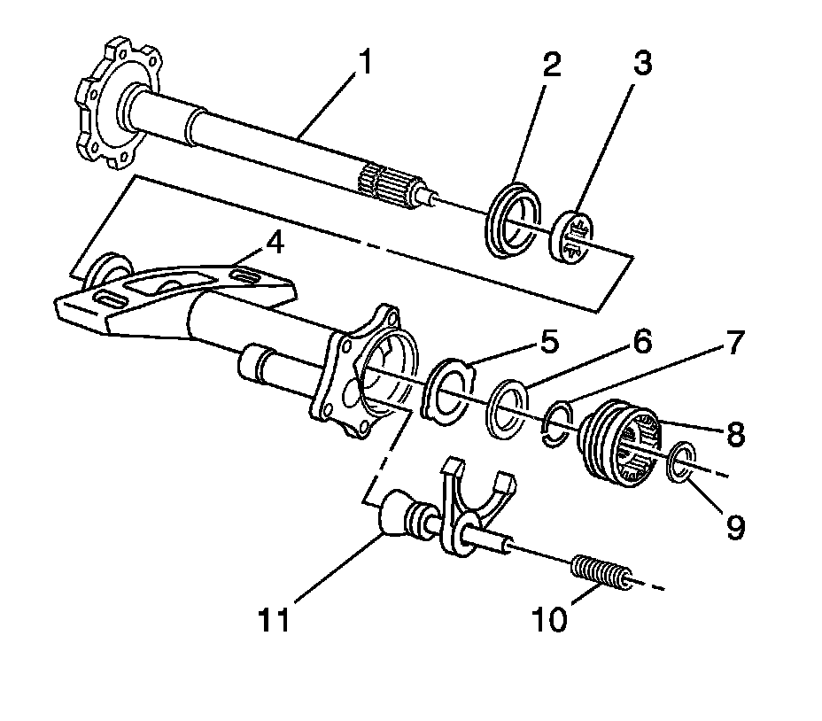
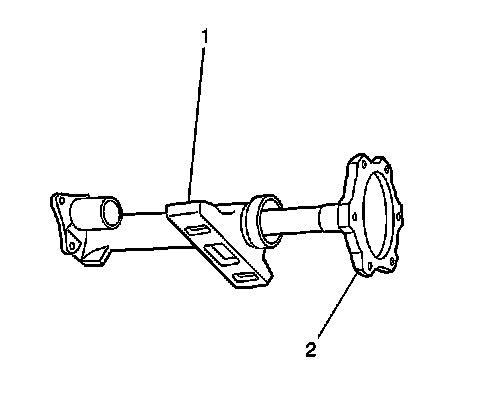
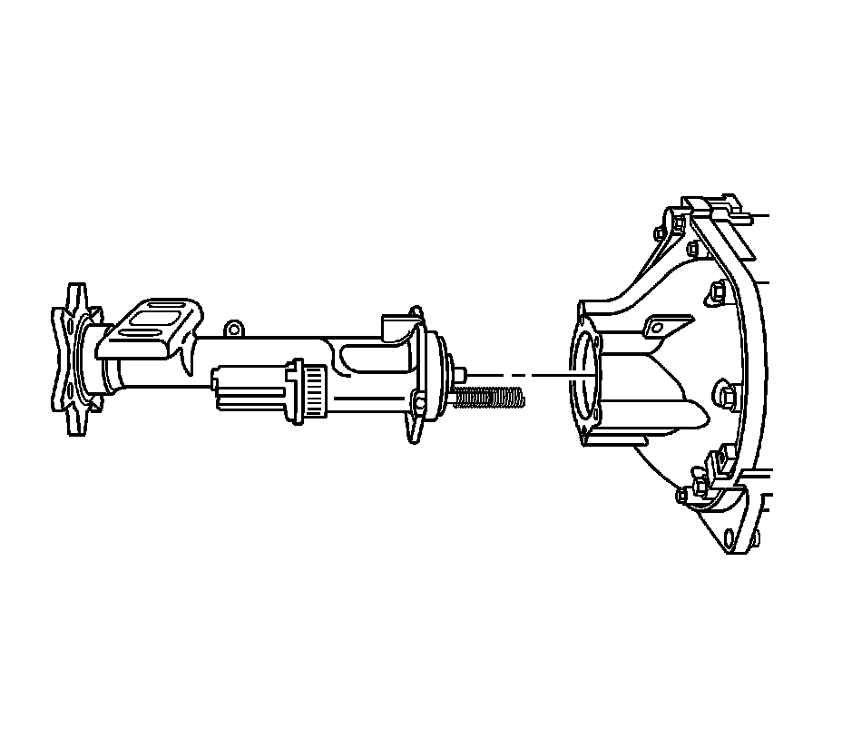

Front Drive Axle Inner Shaft and Inner Shaft Housing Replacement (8.25 S4WD and 9.25 Axles)
Front Drive Axle Inner Shaft and Inner Shaft Housing Replacement (8.25 S4WD and 9.25 Axles)
Removal Procedure
1. Raise the vehicle. Refer to Lifting and Jacking the Vehicle.
2. Drain the differential carrier. Refer to Front Axle Lubricant Replacement.

3. Disconnect the actuator electrical connector.
4. If only replacing the right side inner shaft and/or housing, follow the steps below. If only replacing the left side inner shaft, process to step 16.

5. Disconnect the wire harness from the inner axle housing.
6. For vehicles equipped with the 9.25 inch axle, remove the stabilizer shaft link.
7. For vehicles equipped with the 8.25 inch axle, remove the front shock module.

8. Remove the wheel drive shaft flange bolts.
Important: Support the wheel drive shaft in order to not over flex the CV joint.
9. Disconnect the wheel drive shaft from the inner axle shaft.

10. Remove the inner axle housing mounting nuts.

11. For the 25/35 series vehicles, perform the following steps in order to provide additional clearance so the inner axle housing can be removed from the vehicle.
1. Remove the front axle mounting bracket to frame nuts.
2. Slide the front axle mounting bracket towards the engine. It may be necessary to pull down on the inner axle shaft and/or push up on the mounting bracket in order to gain clearance.

12. Remove the inner axle shaft mounting bolts.

Important: Keep the open end of the inner axle housing assembly up.
13. Carefully remove the inner axle shaft housing assembly from the differential carrier assembly.

14. For the 8.25 inch axle, remove the following components from the inner axle housing:
1. Clamp the inner axle shaft housing (4) in a vise. Clamp only on the mounting flange.
2. The shiftier fork spring (12)
3. The shiftier fork (11)
4. The shiftier fork rod (10)
5. The shiftier connector gear (9)
6. The axle shaft snap ring (8)
7. Axle shaft thrust washer (7)
8. Axle shaft tabbed thrust washer (6)
9. Inner axle shaft housing gasket (5)

15. For the 9.25 inch axle, remove the following components from the inner axle shaft housing:
1. The clutch fork inner spring (10)
2. The clutch fork assembly (11)
3. The clutch shaft shim (9)
4. The clutch sleeve (8)
5. The retainer ring (7)
6. The thrust washers (5, 6)

16. Remove the inner axle shaft (2). Tap out the inner axle shaft with a soft-faced mallet, if necessary.
17. Remove the inner axle seal and the bearing from the axle housing.

18. If only replacing the left side inner axle shaft, perform the following steps:
1. Remove the wheel drive shaft inboard flange bolts from the inner axle shaft.
Disconnect the wheel drive shaft from the inner axle shaft.
2. Remove the inner axle shaft using a hammer and a brass drift.
Installation Procedure

1. If only the left side inner axle shaft was removed, install the shaft by performing the following steps:
1. Install the inner axle shaft into the differential case side gear using a soft-faced mallet until the retaining ring on the inner axle shaft is fully seated within the groove in the differential case side gear. Pull back on the inner axle shaft to ensure that the inner axle shaft is properly retained in the differential case side gear.
2. Connect the wheel drive shaft to the inner axle shaft.
Notice: Refer to Fastener Notice.
3. Install the wheel drive shaft inboard flange to inner axle shaft bolts.
Tighten the wheel drive shaft inboard flange to inner axle shaft bolts to 79 Nm (58 lb ft).
2. If the right side inner axle shaft and/or housing was removed, install the shaft and/or housing following the steps below.
3. Install the new inner axle shaft bearing and the seal to the axle housing.
4. Install the inner axle shaft (2) into the inner axle shaft housing (1).
Carefully tap the inner axle shaft into place with a soft-faced mallet.
5. Place the inner axle shaft housing on end so that the splines of the inner axle shaft is facing up.
6. For the 8.25 inch axle, install the following components into the inner axle housing:
1. Clamp the inner axle shaft housing (4) in a vise. Clamp only on the mounting flange.
Important: Use chassis grease in order to hold the thrust washer in place.
2. Axle shaft tabbed thrust washer (6)
3. Axle shaft thrust washer (7)
4. The axle shaft snap ring (8)
5. The shifter connector gear (9)
6. The shifter fork (11)
7. The shifter fork rod (10)
8. The shifter fork spring (12)
9. Inner axle shaft housing gasket (5)
7. For the 9.25 inch axle, install the following components into the inner axle shaft housing:
Important: Use chassis grease in order to hold the thrust washer in place.
1. The thrust washer (5)-Ensure the tabs on the thrust washer are aligned with the slots in the inner axle shaft housing (4).
2. The second thrust washer (6)
3. The retainer ring (7) onto the inner axle shaft (1)
4. Determine the clutch gear shim thickness. Refer to Inner Axle Shaft Shim Adjustment.
5. The clutch gear shim (9)
6. The clutch sleeve (8)
7. The clutch fork assembly (11)
8. The clutch fork inner spring (10)
Important: The following service procedure is for the 9.25 inch axle ONLY. The 8.25 inch axle uses a gasket.
8. If servicing the 9.25 inch axle, apply sealant to the inner axle housing to differential carrier sealing surface. Use the correct sealant. Refer to Sealers, Adhesives, and Lubricants.
9. If servicing the 8.25 inch axle, install the axle housing gasket on to the differential carrier.

10. Install the inner axle shaft housing assembly to the differential carrier assembly.
11. If servicing the 8.25 inch axle, install the inner axle shaft housing bolts.
Tighten the inner axle shaft housing bolts to 55 Nm (41 lb in).
12. If servicing the 9.25 inch axle, install the inner axle shaft housing bolts.
Tighten the inner axle shaft housing bolts to 40 Nm (30 lb in).
13. For 25/35 series vehicles, perform the following steps in order to install the front axle mounting bracket to the inner axle shaft housing:
1. Slide the front axle mounting bracket towards the frame.
Install the front axle mounting bracket studs into the inner shaft housing mounting flange.
It may be necessary to push up on the front axle mounting bracket and/or pull down on the inner axle housing in order to gain enough clearance to install the mounting bracket studs into the inner shaft housing.
2. Install the front axle mounting bracket to frame nuts.
Tighten the inner axle shaft housing mounting bracket to frame nuts to 90 Nm (67 lb ft).
14. Install the inner axle shaft housing washers and nuts to the bracket.
Tighten the inner axle shaft housing nuts to 100 Nm (75 lb ft).
15. Connect the wheel drive shaft inboard flange to the inner axle shaft.
16. Install the wheel drive shaft inboard flange to the inner axle shaft bolts.
Tighten the wheel drive shaft inboard flange to inner axle shaft bolts to 79 Nm (58 lb ft).
17. Connect the wire harness to the inner axle shaft housing.
18. Connect the electrical connector to actuator.
19. For vehicles equipped with the 9.25 inch axle, remove the stabilizer shaft link.
20. For vehicles equipped with the 8.25 inch axle, remove the front shock module.
21. With either replacement procedure, fill the differential carrier assembly with axle lubricant. Use the correct fluid. Refer to Front Axle Lubricant Replacement.
22. Lower the vehicle.